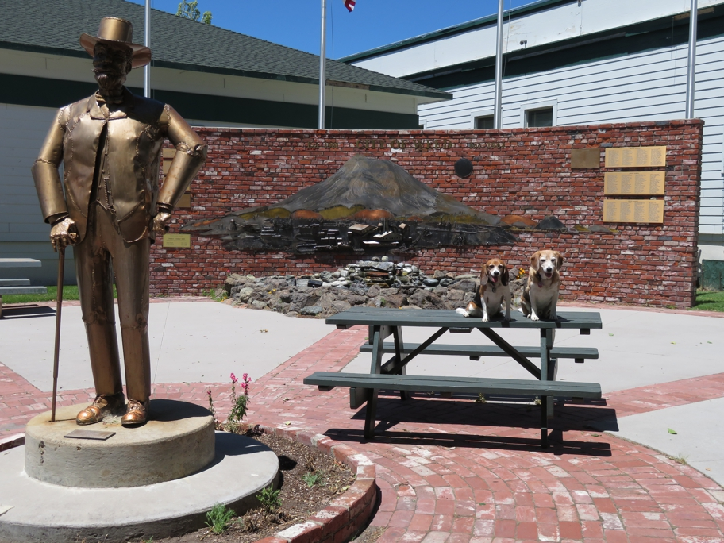

A nice little park in Weed, CA offers both the shady picnic table under a big tree, at which we lunched, and this statue of Abner Weed and remarkable hanging sculpture of the city which took his name. In the 1940s, the sawmill in Weed was the world's largest.
California Huxley Beagle Wallace Beagle Weed